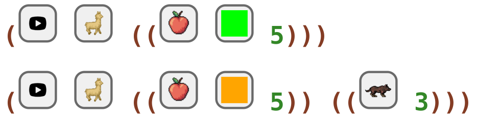
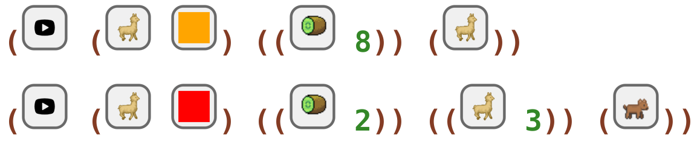
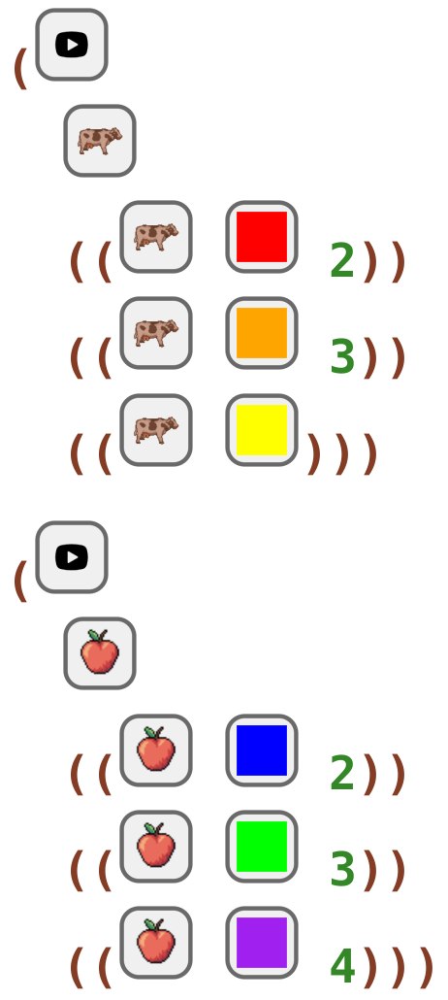
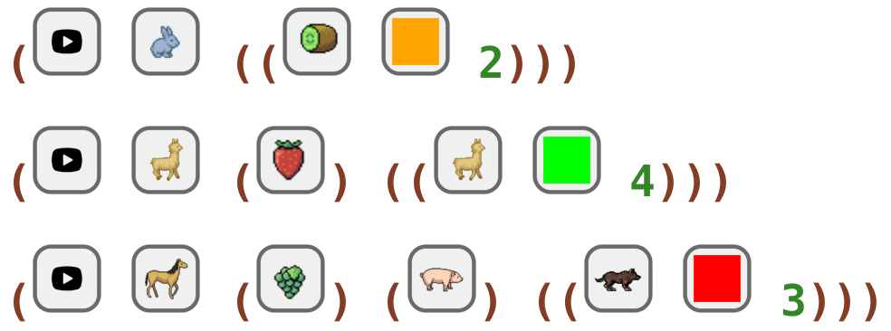
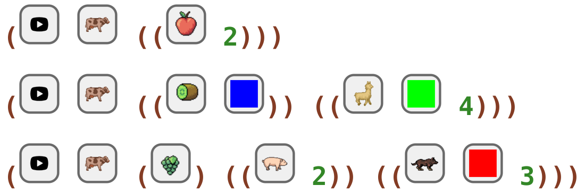

6 More Enemies Katas
6.1 Healer Enemies 006 Kata
read
Code a game with multiple levels: 1) with a llama eating 5 green apples; 2) with a llama eating 5 orange apples, and with 3 wolf friends.
code
#lang healer-animal-enemies (start llama ((apple green 5))) (start llama ((apple orange 5)) ((wolf 3)))
In Ratchet:

6.2 Healer Enemies 007 Kata
read
Code a game with multiple levels: 1) with an orange llama eating 8 kiwis, and with llama friends; 2) with a red llama eating 2 kiwis, and with 3 llama friends, and with dog enemies.
code
#lang healer-animal-enemies (start (llama orange) ((kiwi 8)) (llama)) (start (llama red) ((kiwi 2)) ((llama 3)) (dog))
In Ratchet:

6.3 Healer Enemies 008 Kata
read
Code a game with multiple levels: 1) with a cow eating 2 red cows, and with 3 orange cow friends, and with yellow cow enemies; 2) with an apple eating 2 blue apples, and with 3 green apple friends, and with 4 purple apple enemies.
code
#lang healer-animal-enemies (start cow ((cow red 2)) ((cow orange 3)) ((cow yellow))) (start apple ((apple blue 2)) ((apple green 3)) ((apple purple 4)))
In Ratchet:

6.4 Healer Enemies 009 Kata
read
Code a game with multiple levels: 1) with a rabbit eating 2 orange kiwis; 2) with a llama eating strawberries, and with 4 green llama friends; 3) with a horse eating grapes, and with pig friends, and with 3 red wolf enemies.
code
#lang healer-animal-enemies (start rabbit ((kiwi orange 2))) (start llama (strawberry) ((llama green 4))) (start horse (grapes) (pig) ((wolf red 3)))
In Ratchet:

6.5 Healer Enemies 010 Kata
read
Code a game with multiple levels: 1) with a cow eating 2 apples; 2) with a cow eating blue kiwis, and with 4 green llama friends; 3) with a cow eating grapes, and with 2 pig friends, and with 3 red wolf enemies.
code
#lang healer-animal-enemies (start cow ((apple 2))) (start cow ((kiwi blue)) ((llama green 4))) (start cow (grapes) ((pig 2)) ((wolf red 3)))
In Ratchet:
